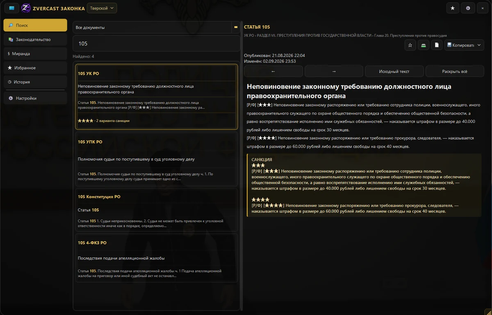

{kind=link}
Быстрый поиск
По номеру, названию и тексту. Части статьи, относящиеся к ним санкции и переход к полному документу.
Посмотреть документы ↗Быстро. Удобно. Всегда под рукой.
Находите статьи, смотрите санкции, открывайте Миранду и собирайте собственные памятки — в помощнике поверх игры.
Приложение для Windows. Установите его на игровом компьютере.

Всё, что нужно для работы с законодательством — в одном приложении.
По номеру, названию и тексту. Части статьи, относящиеся к ним санкции и переход к полному документу.
Посмотреть документы ↗Сохраняйте важные статьи в избранное, добавляйте заметки и располагайте записи в удобном порядке.
Посмотреть избранное ↗Быстрый доступ к тексту Миранды. Читайте, копируйте или сохраняйте собственную версию текста.
Используйте готовые профили, добавляйте и редактируйте документы. Импортируйте и экспортируйте свои профили.
Выберите удобный формат под любую ситуацию.
Для полноценной работы: результаты поиска, статья и навигация рядом.
«Телефон» — режим Windows-приложения, не приложение для Android или iOS.
Выберите готовую базу или создайте свою.
Подготовленная редакция законодательства
Редакция 1.0.0 опубликована
Законы, избранное, история и Миранда хранятся отдельно для каждого профиля. Новая редакция не заменяет вашу базу автоматически.
Посмотреть управление профилями ↗Загрузите установщик и установите приложение на Windows-компьютер.
При первом запуске выберите Тверской, создайте пустой профиль или импортируйте свой.
Назначьте удобную горячую клавишу в настройках помощника.
Открывайте помощник во время игры и находите нужные статьи.
Позже профили доступны через меню в заголовке или «Настройки → Профили законодательства». Браузер не управляет локальным приложением.
При каждом запуске приложение проверяет новые версии и скачивает их в фоне. Установка выполняется при следующем запуске. Готовое обновление можно применить перезапуском, когда вам удобно.
Что нового в версии 0.11.4 ↗Это приложение для Windows x64. Режим «Телефон» меняет форму окна на компьютере — версии для Android и iOS нет. Текущая сборка проверена на Windows 11.
Да, поиск и чтение загруженной базы работают офлайн. Интернет нужен для скачивания программы и проверки новых выпусков.
Да. В разделе «Законодательство» можно добавить название и текст документа, редактировать и удалять документы своей базы.
Откройте меню профиля в заголовке приложения или управление профилями в настройках. Выберите создание пустого профиля, готовый шаблон или импорт файла .zlp. Экспорт доступен в меню профиля.
Нет. Обновления программы устанавливаются автоматически, а авторские редакции законов предлагаются отдельно. Действующий профиль не перезаписывается. Дата сверки Тверского — 05.09.2026, это не дата выпуска приложения.
Новости и связь с ZverCast — в Telegram @zvercast. Не отправляйте пароли или приватные ключи. Помощник не гарантирует разрешение на использование на любом сервере — учитывайте правила своего проекта.
{kind=link}
{kind=link}
{kind=link}
{kind=link}
{kind=link}
{kind=link}
{kind=link}